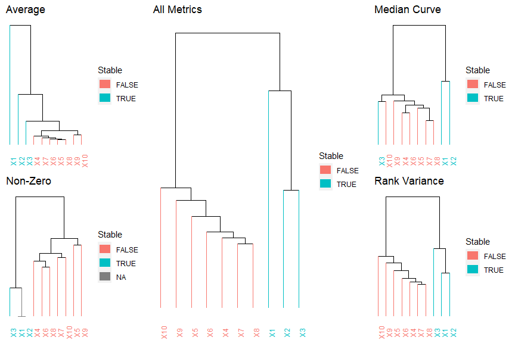

library(ParSPaS)Partial Solution Path Stability (ParSPaS) is a model selection framework for Generalised Linear Models when the Lasso estimator is used.
library(devtools)
devtools::install_github("smithconnor/ParSPaS")We simulate a dataset with 100 observations and 10 varaibles.
We apply the ParSPaS method to visualise varaible stability and present the resulting plots.
library(ParSPaS)
## Data simulation
set.seed(1234)
n = 100
p = 10
varNames = paste0("X", 1:p)
beta = c(2,-1,-1, rep(x = 0,
times = p - 3))
x = matrix(rnorm(n*p),
ncol = p)
colnames(x) = varNames
y = rbinom(n = n,
size = 1,
prob = expit(x %*% beta))We then apply the ParSPaS framework and the following figures are created.
output = ParSPaS::parspas(x = x,
y = y,
B = 100,
I = 20,
family = "binomial",
seed = 1234)
ParSPaS::combine_plot(output$plots)